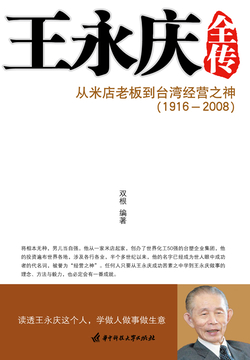

王永庆全传
从米店老板到台湾经营之神（1916-2008）读透王永庆这个人，学做人做事做生意。将相本无种，男儿当自强。他从一家米店起家，创办了世界化工50强的台塑企业集团，他的投资遍布世界各地，涉及各行各业，半个多世纪以来，他的名字已经成为世人眼中成功者的代名词，被誉为“经营之神”。任何人只要从王永庆成功因素之中学到王永庆做事的理念、方法与毅力，也必定会有一番成就。
简介
从米店老板到台湾经营之神（1916-2008）读透王永庆这个人，学做人做事做生意。将相本无种，男儿当自强。他从一家米店起家，创办了世界化工50强的台塑企业集团，他的投资遍布世界各地，涉及各行各业，半个多世纪以来，他的名字已经成为世人眼中成功者的代名词，被誉为“经营之神”。任何人只要从王永庆成功因素之中学到王永庆做事的理念、方法与毅力，也必定会有一番成就。
版权
出版社华中科技大学出版社
出版时间2010年1月
字数175,498
分类传记榜-财经人物
精彩点评
推荐
推荐
王永庆送给儿子的不是一大笔一辈子也花不完的财产，而是给儿子装备一种意志，一种精神。他知道，一个人只有有了坚如磐石的意志、赴汤蹈火的气魄、滴水穿石的精神，荣辱不惊的心态，才能成为一位真正的富人。
推荐
了解王永庆一生的书籍，一个穷家孩子过早扛起家庭责任，小学没有毕业就去别人家米店开始打工，摸索总结经验，之后自己开米店独立创业，后又做木材生意，之后又做塑料及制成品生意，一步步逐渐建立了台塑帝国大厦，期间有成功有失败，在实践中总结前行，形成非常适合自己台塑集团的一整套制度体系，生意也开始从台湾走向岛外，生意遍布东南亚和中国大陆以及美国，形成了塑料上下游相关的一系列企业工厂，甚至有自己的运输原料船队，还成功开办了长庚医院并将其运作成台湾岛内最著名的医院。子女教育上也很成功，企业员工培养上也很成功，集团继承人也很成功。
第1章 前言

王永庆全传
双根编著
- 第1章 前言
- 第2章 强者的声音——命运靠自己掌舵
- 第3章 创业经商——卖米卖砖卖木材
- 第4章 坎坷石化路——打造台塑王国
- 第5章 西天取经——发展就要走出去
- 第6章 赤子之心——为两岸关系奔走
- 第7章 善于动脑——商机来源于实践
- 第8章 长庚模式——医院管理企业化
- 第9章 自力更生——做强、做大的要诀
- 第10章 分吃蛋糕——大家赢，才是真的赢
- 第11章 养人育人，为己所用
- 第12章 追求合理——企业管理合理化
- 第13章 管理无小事——改善工作从点滴开始
- 第14章 人格魅力，铸就辉煌
- 第15章 信义为重，遍施恩泽
- 第16章 传承事业——破除富不过三代的诅咒
- 第17章 谁主台塑——谁是台塑新舵手？
- 第18章 王永庆大事记
- 第19章 参考文献
第1章 前言
王永庆提出的很多管理理念和方法得到了广泛流传，比如： 追根究底：对问题不追究到水落石出，绝不罢休； 务本精神：凡事只求根本，只求合理，不问结果； 瘦鹅理论：忍饥耐饿，坚韧不屈，等待机会的到来； 基层做起：脚踏实地，按部就班，从基层做起，成功的机会就愈大； 实力主义：学历不等于实力，实务经验愈丰富，成功的机会就愈大； 切身感：制定让员工有切身感的管理制度，发挥员工最大潜能； 价廉物美：坚持供应价廉物美的原料给下游客户，企业得以蓬勃发展； 客户至上：买卖双方唇齿相依，给客户利益自己才能有最大利益。
第2章 强者的声音——命运靠自己掌舵
人的自信不是无缘无故产生的，它是通过一个个小小的成功积累起来的。对青少年来说，要积极行动，并安于做小事，从小事中获得成功的感觉，以增强自信。不做事，只靠自我肯定，只能获得盲目的自信，而不是真正的自信。
穷时我们要知道勤奋，因为“一天之计在于晨，一年之计在于春，一生之计在于勤！”一勤天下无难事！勤
很多人为环境所困，难有作为，即便对现状极为不满，却不敢寻求变化以突破重围，即使偶有举动，一遇小小挫折便止步不前，像蜗牛一样缩回自己的壳里。这种人，与其说是没有本事，还不如说是没有胆量。
第3章 创业经商——卖米卖砖卖木材
“质优价廉”和“顾客导向”的经营策略也就由此在他的心中扎下了根。这种建立“顾客档案”的做法对台塑后来的“表单化”经营管理方式起到了至关重要的指导作用。
虽然自己已经有了相当多的固定客户，但若要想多赚钱，那么就要向上游发展，搞批发业务，即由自己来碾米，然后再自己卖或者批发给别人。因为他发现，沿着这条线越往上走，厂商就越少，竞争也就越小，并且行业的利润也就越高。
贫寒的家境，以及在恶劣的条件下的创业经验，使我年轻时就深刻体会到，先天环境的好坏不足喜亦不足悲，成功的关键在于一己的努力。”
穷人赚了钱，如果不知节俭，吃吃喝喝，不置产业，就永远摆脱不了贫穷。
不能一味依赖环境生存，还得多“施肥”，事业才能发达。如果听之任之，事业的土壤必定会贫瘠。
在不公平的竞争环境中，一般人根本无法找到一项适合自己且能通过劳动获取财富的事业。
第4章 坎坷石化路——打造台塑王国
干大事业的人，要有宏伟的气魄，远大的志向，敏锐的目光。干大事业的人，不会为了一点儿眼前的小利而止步不前，他们目光长远，做事果断。
经过再三思考，王永庆认为，项目既然已经上马，那么就没有退路。此刻惟一能做的，一是增加产量以摊薄成本；二是向下游二、三次加工业拓展以消化中游原料
凡是设备投资，除了要求品质性能精良以外，如何控制投资费用，谋求低廉的成本条件，是企业经营中的一个非常重要的问题。尤其是在岛内财力与物力均不宽裕，原料大多依靠进口，且本地市场狭小，产品必须外销的情境之下，如何降低投资费用，并以此减轻成本负担，谋求在国际市场上占有一席之地，其经济意义十分重大。
以后凡是涉及设备投资事宜，首先要追求物美价廉，对于供应商的选择以及采购管理制度等方面，都要用心做到最为妥帖为止。
同样一个问题，台湾和美国这两个地区的人民由于观念及想法各异，所产生的结果自然也大不相同，但关键问题在于是否能将基本道理阐述清楚。
高效率的体制和合理化的经营管理是高质量、高产量产品的保障。为求得最大效益和效率提高，南亚公司将各不相同的事业机构划分为塑胶第一、二、三、四事业部及门窗、纤维、台染、可塑剂、电路板、工务、国外等11个事业部。
第5章 西天取经——发展就要走出去
要想把事业做大，就要与国际接轨，与世界商业巨头同行。
王永庆虽然在台湾岛内兴建上游原料企业的愿望难以实现，但是他并没有因此而放弃，他把实现梦想的希望寄托在了岛外。
美国商家从不隐讳利益，老板要确保利润，员工也要拿到足够的薪水。大家不是靠降低利益、勒紧裤腰带来支撑日子，而是多产多销、多赚多花，从而形成一种良性循环。
就是能彼此认识，确保正当利益。事业从这个基点产生，终于造成了繁荣的社会
要想保持巨型企业的稳固地位，生产出一流产品，非增加技术研究与开发力量不可。
王永庆认为，美国的法律制度比较健全，而且，美国是个高度开放的社会，资金和人员流动都比较自由，作为投资场所，这是一个极其重要的优势。当然，投资美国还有其他优越条件。比如，美国人有高效率的工作作风；美国人坦荡而诚恳，没有那么复杂的人事关系网；美国在世界上的政治地位高，军事实力强，因而相对比较安全；美国人由于长期的优越感，养成了他们不拘小节、大大咧咧、喜欢舒适、贪图享受的民族个性，要赚美国人的钱，容易多了。此外，投资美国还可以利用美国丰富的资源，大大节省原料的运输费用和时间；投资美国，还可以把产品直接打入美国市场，避免各种各样的关税壁垒和非关税壁垒；投资美国，可以利用美国的先进技术，促使自己的设备更新和产品换代，使企业现代化的步伐迈得更快！
至于投资美国的时机，王永庆重点考虑的是成本节省的问题。怎样才能用更少的投资换取更大的成果呢？王永庆有一个理念：卖冰淇淋要在冬天开业。冰淇淋是夏令商品，为什么要在冬天开业呢？按王永庆的逻辑，冬天吃冰淇淋的顾客少，必须全心全意竭尽全力去经营，并且要严格控制成本，降低价格，并在服务上狠下功夫，才能勉强维持生存。这样一点一滴建立基础，等夏天来临时，发展的机会到了，力量便一下子壮大起来。
危中有机
王永庆投资美国的时机终于成熟了。20世纪70年代初，石油危机爆发，全球经济一片萧条。物价飞涨，许多商店关门，工厂不是倒闭就是惨淡经营，失业人数剧增。就在这时，王永庆远涉重洋，从台湾来到世界工业大国——美国。在全球经济一片衰退之时，大肆收购美国企业，让美国人为之惊叹，也再一次显示了王永庆过人的胆识、远大的目光。
王永庆投资美国的时机终于成熟了。20世纪70年代初，石油危机爆发，全球经济一片萧条。物价飞涨，许多商店关门，工厂不是倒闭就是惨淡经营，失业人数剧增。就在这时，王永庆远涉重洋，从台湾来到世界工业大国——美国。在全球经济一片衰退之时，大肆收购美国企业，让美国人为之惊叹，也再一次显示了王永庆过人的胆识、远大的目光。
经济不景气的时候，可能也是企业投资与开展扩建计划的适当时机。
凡是经济不景气与市场萧条的时刻，正是企业锻炼实力的最好时机。在这种情况下，经营者要沉着冷静，咬紧牙关，改善体质，不断强化企业内的经营管理，如此才能降低生产成本，提高企业的竞争力。如果还有余力的话，不妨在这时拟定完善的投资计划，掌握适当的时机，做有效或前瞻性的投资，通常可以抢先得点，化危机为契机。
在经济不景气的时候，再投资新的计划，至少建厂的成本比较低，可以增加产品的竞争能力。而且，经济形势的好坏，大都遵循一定的周期在转，兴建一座现代化工厂，约需一年半到两年的时间，在经济不景气的时候建厂，等到建厂完成时，市场景气又在逐渐复苏中，正好赶上时机。
任何事情都有其两面性，王永庆虽然在美国经济不景气的时候收购了很多企业，省下了一大笔钱，但是这些工厂并没有在重建或改造之后马上就带来经济效益。因为这些厂之所以被迫出售，总是因为存在这样或那样的问题，王永庆在接管后也没能迅速扭转局面。王永庆原先预计这些厂正式投产后，经济已经开始复苏，但事实上，经济复苏的时间比他预想的要迟。这是可以理解的。企业家能对世界经济大势在宏观上进行把握，却不可能在细节上算得那么准确，因此在美国的台塑厂不但没有赢利，反而一度出现亏损的现象。
在美国裁员，不是一件轻而易举的事，美国工人文化素质高，权益意识强，企业裁员常引发工人的抗议与示威活动
以上事实看来，王永庆所谓“母猪耳朵里做出绣花荷包来”的诀窍，无非是做别人怕麻烦、不愿做的事，是在遇到困难时坚持不懈，这也许是“瘦鹅理论”的延伸。试想，在经济不景气的状态下，企业如果“饿不死”，一旦等到经济复苏，其高速发展是可以预期的。也许正是这种信念，使王永庆在面临困难时毫不动摇。
第6章 赤子之心——为两岸关系奔走
台湾虽然经过一番发展促成了经济繁荣，可是生活水准跟着水涨船高，工资大幅提升的结果，使得许多加工产业已经渐渐失去竞争的条件。一般情况下，当劳力密集性的小型加工产业遭遇到如上发展瓶颈时，即必须设法另起炉灶，筹谋其他更具附加价值的技术密集性产业。但是台湾因为缺乏工业基础建设，再加上企业经营经验心得相对也是有限，以至于对上述的产业转型造成了根本性的阻碍，实际上很难伸展手脚。
台塑集团的经营理念和方法，亦即石化产业必须上中下游垂直整合，才能形成核心竞争力，并参与国际竞争。
台塑集团的经营理念，基本上，我们深切体认人性“由俭入奢易，由奢入俭难”，而且人要松懈很容易，要紧张起来，相对比较困难。所以在企业经营上，首先必要思考的基本问题是，如何维持不松懈的经营态度。 对内部而言，必须由本企业领导者以身作则，起带头作用，凡事追根究底，谋求合理化，以“止于至善”作为目标，永无休止的追求，才能在持续谋求合理化的过程中，凝聚企业各层人员的共识，普遍养成追求合理化的习惯，随时随地检讨现状中所存在的种种不合理，并设法改善，以此锻炼具有竞争力量的经营体质。 对外而言，台塑一般是主动顾及客户的经营发展需要，在售价方面自我抑制，尽其可能提供价廉物美之原料，以合理的售价，赚取合理的经营利润，如此即会形成一种经营上的压力，不致因为利润高，赚钱容易，而在不知不觉中造成松懈。由此而观，我们在经营上所遵循的，乃是一种兼顾客我，利己利人而能维系长远的精神与理念，且惟有能够利己利人，企业才能克尽其回馈社会的基本宗旨。
看待问题时高屋建瓴，做事时行为坦荡，与人沟通时言语耿直
所谓‘皮之不存，毛将焉附’，上、下游业者间之关系，实际有如毛皮之相互依存。
王永庆还决定在各方面向下游业者提供优惠，以便使其能够安心经营。台塑当时采取的定价原则和一般国际市场的定价惯例有所不同。通常情况下，当国际市场竞争激烈时，厂商的外销价通常都低于内销价，借以促进外销。但台塑出于长远打算，坚持外销价比内销价高3%～5%，并且一次定价连续3年不变。至今，台塑维持该定价策略不变，因为定价策略调整之后，台塑仍可维持一定程度的利润率。 应该说，企业获取合理利润是其有效经营管理的具体体现。
王永庆担心的是，下游加工厂商大量外移的结果，终将会影响到岛内的石化上中游企业的经营结构。
生意双方都希望从交易中获取利益，因此，卖方在做生意时，除了考虑自己的利益以外，也必须同时替对方设想，让其感觉有利可图，如此生意才会长久。特别是对于原料的供应者而言，如果只求一己的片面利益，而不顾及下游客户经营上的需要，那么绝对无法追求到真正的最大利益。台塑在经营观念上一向坚信，惟有能够妥善兼顾客户利益者，自己才能从中求得最大的利益。
各厂各自成立一家独立公司，全部由南亚出资，独立核算，以“公有私营”的方式交给合适的经理人去经营，因为这样安排，其经营者才有切身感。台北南亚总部负责制定相关管理制度以及分红入股办法，每年有盈余时，可让经营者及相关人员入股。经过一段时间以后，可挑选一些经营绩效良好的公司，并向大陆申请其股票上市，希望将来有一天能成长为大陆的大众持股公司。各厂每日的经营活动皆由计算机和南亚公司总部联系，并由总部作必要的协调及控制。 南亚总部须随时掌握其产销动态，如发现有异常事项，或不符合制订的各项标准，那么必须立即提出纠正办法并督促其改善。除此之外，总部同时也提供其他各厂的产销资料作为参考，在互相比较之下必定产生激发竞争意志的效用。
在商言商，机智呀
有趣的是，此时有记者问他对“戒急用忍”问题怎么看，王永庆以调侃的口吻回答说：“针对这个问题，我的看法是，我们在待人处世的修养上，当然应该处处要‘戒急用忍’。至于若是要到大陆那边做任何事业，则‘戒急用忍’这句话的意思，我们不妨可以这样解释，当成是我们的朋友或是前辈们的好心善意，提醒我们要小心行事，所以‘戒急用忍’在这里是句好话，我的看法就是这些。”
有趣的是，此时有记者问他对“戒急用忍”问题怎么看，王永庆以调侃的口吻回答说：“针对这个问题，我的看法是，我们在待人处世的修养上，当然应该处处要‘戒急用忍’。至于若是要到大陆那边做任何事业，则‘戒急用忍’这句话的意思，我们不妨可以这样解释，当成是我们的朋友或是前辈们的好心善意，提醒我们要小心行事，所以‘戒急用忍’在这里是句好话，我的看法就是这些。”
王永庆说：“我们也一再提出说明，凡能够做到计算机化管理，就像是天衣无缝一样，绝不会产生任何漏洞，因此可以免除架设铁丝网。更重要者，在无漏洞之下不但国家税收必定增加，而且国民普遍守法，社会秩序井然，违法之事自然能够杜绝，其意义之深不难料想。”
任何生产工厂都必须谋求产销平衡，才能维持人员等一切正常安定。而且就经营规模而言，一般生产工厂都是可进而不可退，只能扩充生产规模而不能减产，一旦减产就是衰退。依现有三次加工厂商的发展趋势，很快就呈现供过于求，因为国际市场也有一定的容纳限度，就像进口一方常常采取限制进口数量或者为了保护自己而提高进口关税一样，这些措施都会对出口造成不利。
这种本无恶意的关照在执行过程中引起了一系列连锁副作用，民间的工程公司在该等特权单位垄断之下，无法获得承揽大规模工程的机会，业务难以正常发展，长此以往，其工程经验及技术将无法正常累积成长。而特权工程单位在没有任何技术优势的条件下承揽到工程，就会提高价钱转包给其他承包商，如此一手又一手转包，都只为图谋利益而已，最终实际施工的，大多是谈不上规模的小型营造公司，不仅价格虚高，工程质量也没有保证。
第7章 善于动脑——商机来源于实践
这就更加验证了他的实力主义——学历不等于实力，实务经验愈丰富，成功的机会就愈大。他提出，卖冰淇淋要在冬天开业，这其实是在竞争对手还处于“冬眠”状态时，自己就已经开始成长了，无形之中就走到了别人的前面；他倡导商业投资不投机，脚踏实地的经营自己的企业；他把企业管理成功地运用于医院管理，从而收到了解决台湾地区看病难，提高了医院收益的双重效益。他把经营企业的成功经验与众人分享，真正做到了创办企业，服务社会。
做生意，就是要善于动脑子，只有善于动脑子，才能从细小的环节上发掘出无限的商机。
不怕不识货，就怕货比货，王永庆看问题总是喜欢比较，但是他并不是像一般人那样只注重表面现象、外在特征，他能够认真思索，深入剖析。
制度建设非常重要，通过制度约束人，制度没有缺陷，自然就能让所有的人处于公平之下。
第二次世界大战结束后，日本作为一个战败国，国家经济千疮百孔，无家可归的人不计其数，非常凄惨。他们为什么能够迅速崛起？原因就在于日本人有危机意识，他们深切地感受到，如果这样下去国家就会完蛋。
王永庆经常告诫年轻人，不能满足，不能放松，对每一件事情，都要有“追求到底，搞清楚”的精神，否则永远都不能坚强，永远都不能进步。
老子说：“大道甚夷，而民好径。”意思大致是说，成功的道路很平坦，而普通人却喜欢走捷径。事实也是如此，把投机取巧的手段当成“捷径”，肯定会走进“死胡同”。只有依靠脚踏实地的工作、勇于创新的精神，才是成功的“大道”。 王永庆一贯坚持踏踏实实做人，勤勤恳恳做生意，不愿意从事炒股、炒地皮等投机生意。他认为，这种钱是不经辛苦得来的，是靠不住的。只有靠勤劳苦干赚钱才是真正的创业。
采用“逢低慢慢进，逢高慢慢出”的策略，开始大手笔操作股票。
在危机依然屹立不倒的企业，其反弹力可想而知，或许是投资企业的一种选择
这些瘦鹅经过长时间的饥饿，如果生命力不够强，可能已经残废而难以挽救。但是如果经过长时间挨饿仍不致残废，可见其生命力相当强韧，加以饲养以后不但很快就能恢复正常的成长，甚至成长情形比一般家禽还要良好。
这些瘦鹅经过长时间的饥饿，如果生命力不够强，可能已经残废而难以挽救。但是如果经过长时间挨饿仍不致残废，可见其生命力相当强韧，加以饲养以后不但很快就能恢复正常的成长，甚至成长情形比一般家禽还要良好。
饲养瘦鹅的经历给王永庆带来了两点启示： 第一，他认为企业经营在不顺利时，要像瘦鹅一样能忍饥挨饿，亦即企业家要有渡过困难时期的勇气和毅力。只要企业垮不掉，一旦行业景气，企业就会像瘦鹅一样迅速地成长壮大起来。 第二，他说鹅之所以瘦的原因不在鹅本身，而在于农户的饲养方法不当。同样企业经营也是如此，效益下滑的原因不是员工工作不够努力，而是老板的管理方法存在着致命的缺点所致。
第8章 长庚模式——医院管理企业化
天下没有不可能的事，天下也没有简单的事，勤劳朴实是根本。”
龚文华说，医师在长庚医院不是员工，而是合伙人。全院2580位医师，不像公立医院那样拿固定薪资，而是与医院拆分，共同享有收益。医师的薪资所得，将根据他的资历、业务积分和科内积分来算，也就是除了底薪之外，还需“论件计酬”。当然，他的学术能力与医疗品质也会纳入积分
不少医院经常传出的采购回扣，在长庚医院是严禁的。由于长庚医院规模大、分院多，联合采购的优势拓展了议价空间，从而大大降低了成本。据了解，有些医院采购的昂贵医疗仪器，长庚通常以不到半价就能买到。龚文华透露，他们最少能比同业节省10％到15％的采购成本。
台湾的医生大多个性鲜明，特别是来自公立医院的医生，因为多数采用“师徒制”，即一个教授通常指导几个学生，因此一个专科创立后不久即出现多个“山头”，“门徒”之间老死不相往来。与其让他们在一个单位之内“派系相争”，不如分而治之：既化解矛盾，又形成竞争，充分调动并发挥了每一位主治医师的积极性。
管理层深刻认识到，惟有具备良好的管理基础，才能使企业的经营根基趋于稳健，进而提升经营水平。
第9章 自力更生——做强、做大的要诀
在长期的实战中，王永庆确立了自己的竞争“信条”，即：把握原则，正当竞争。王永庆认为，如果竞争失去了原则的话，不仅无法保证自己的利益，还会失去对方的尊重，企业的前途更会受到影响。无论市场的竞争态势如何，都必须采用正当的竞争手段，因为正当的竞争是促进事业成功和个人成长的绝对必要的因素。事实上，无论采取何种竞争手段，人们都应认识到，良好的竞争心理，正当的竞争精神是必要的。经营者不能为了竞争而竞争，而是通过竞争，维持商界和社会的共同繁荣，这才是竞争的真正目的。 那么，什么是正当的竞争呢？王永庆认为，有三个核心要素：质量、价格和服务。
在质量方面，虽然王永庆点点滴滴追求降低成本，却从不以牺牲产品质量为代价。他所提倡的降低成本，绝对是建立在产品优质的基础上。 在服务方面，王永庆强调共存共荣，兼顾双方利益，争取双赢。 在价格方面，王永庆一直强调“价廉物美”，认为它是台塑竞争力的核心所在。
王永庆认为，价格的制定并不是随意的，必须考虑到成本，那些建立在合理成本与利润基础上的价格是不存在讨价还价的问题的。企业只有在降低成本、保证合理利润的基础上才可能答应降价的要求。
王永庆认为企业经营者应当一方面努力降低成本，以尽量低廉的价格出售产品，另一方面也不能随意降价。也就是说，王永庆的降价策略绝不是权宜之计，而是着眼于长期的战略眼光。
不要把降价要求当作荒唐的无稽之谈，不妨检讨一下看看。如果对方拿世界标准的价格来杀价，那么就不能认为这是无理取闹，而必须从所有的角度来研究其可行性。
企业发展不能总是依靠政府来保护，这对企业来说是弊大于利的。
永庆认为企业家肩负着三项任务，那就是要对股东负责，要尽国民义务，要使员工成才。
这样的眼光是不能要的，一个人总是把目光盯在过去取得的成就上，这样怎么能进步呢？
作为企业的管理者，不应该把目光盯在赚了多少钱上面，而是要分析怎么会赚了这么多钱，这些钱是哪里来的，这才是问题的症结所在。通过分析就能找到对企业发展有利的措施或方法，检验管理工作的成效，明确努力的方向。而且很多时候，赢利是由多方面的原因造成的，通过深入分析，就能够找出主动力和次要因素，甚至还有一些不合理的原因，这才是管理者的工作重点。”
企业发展有硬要素和软要素之分。在硬要素中，科学技术是第一生产力；在软要素中，理念是首要生产力。俗话说得好：“好产品出自好管理，好管理出自好公司，好公司出自好理念。”
“勤劳朴实”决不是一句口号；“止于至善”更需要无比的责任心与耐力。他认为，凡在他身边高喊口号的，虽然听起来悦耳，但此人的责任心必定在下降。台塑不需要口号，只需要负责任的“检讨”和切实的“改善”。
从始至终，王永庆都在强调制度，他甚至认为他的理念就是企业最大的制度。然而，这样的理念和制度的贯彻并非通过个人偏好、意志和权力，而是通过以身作则、加强管理层的责任心、培养切身敬业精神来实现的。
王永庆为倡导这些制度毕一生精力：注重总结“道理”来培养员工的切身感，强调非正式制度的影响和作用；注重透过“六大管理机能”，包括预算与目标管理等，对生产过程实施有效控制，强调各事业部要落实单位责任制度；坚持推行“异常管理”，强调在产销过程中通过加强责任心管理来不断检讨并消除各种不合理制度，直至“止于至善”；注重透过客户管理来培养下游企业的购买力，强调原料生产与管理的目标是持续不断地提供物美价廉的产品，以增强下游企业的竞争力。
没有理念，制度就没有灵魂；没有制度，责任心就没有根基；没有责任心，企业管理就没有效率。
第10章 分吃蛋糕——大家赢，才是真的赢
王永庆成功最重要的因素之一，是他深通人性，擅于为他人着想。坚持利他利己的合作是王永庆一贯的宗旨。他拥有广阔的胸怀和长远的战略眼光，他相信为别人设想的越多，自己的收获越大。他与人合作本着相通相融、互相提携、互相合作、互相扶持的精神，坚持精诚合作、共存共荣、共谋发展。
产品透过业务人员转到消费大众，业务人员就成为公司和客户之间的桥梁，一定要站在公司和客户的中央，使买卖双方都居于平等的地位。台湾有一句土话：‘买也要吃，卖也要吃’，买卖双方都要追求最高的利益。业务人员必须了解客户至上的土道理，他受雇于公司，本来要百分之百地站在公司的立场，一心一意为公司谋求利益，现在要做公司和客户的桥梁，是否要各百分之五十呢？不是这样，既然‘买也要吃，卖也要吃’，业务人员就应站在中间做桥梁，要为两方追求百分之百的利益才对。
第一，价钱要公道，甚至在竞争的市场中要配合客户的需要，压低价格供应；第二，品质要符合水准，而且确保稳定；第三，交期要准确；第四，服务必须周到。以上的4个条件，缺少一个都不行。
基于“客户至上”的经营观念，台塑在经营管理方面，采取了四种做法： 第一，采取中央集权式的管理制度，由总公司全盘掌握客户的资料与业务动态，以制定有效目标，带动全面业务。曾经有一个来自ICI的业务员向王永庆建议，要在全美国使用外汇的主要地区，设立数所业务分支机构，下设若干业务员，再由分支机构的主持人向总公司负责一切业务推销事宜。此项建议被王永庆否决了，他说：“我不赞成这种做法，因为这样做的结果，总公司的业务中枢机能等于全部交给分支机构负责。如此一来，对于各个客户的接洽就会变成只有分支机构负责，总公司的业务中枢无法和客户产生直接往来的关系，只能依靠分支机构所提的报告，根本不可能了解客户真正的交易动态。久而久之，对于千变万化业务动态就会隔阂、生疏，不但变成像机器人一样，失去思考、判断的机能，而且总公司的业务机能一旦失灵，就等于树从根部开始腐烂。 第二，认真倾听客户的意见。
身为营业人员，万一遇到产品品质不符客户要求的事件时，应该在客户面前担当起来，诚恳地道歉，并立即设法调换或谋求其他解决办法，回头再反应给工厂要求改善，千万不可在客户的面前诉说工厂的不是。
第三，积极展示、宣传自己的产品，提供优质服务。
第四，追踪客户和他们的客户，为客户着想。
适当做点“傻事” 一般商人在“利益最大化”的旗帜下，使出各种精明的手段，只顾自己赚钱，不管别人是否有利。王永庆的做法与众不同，他的经营理念是：买也要吃，卖也要吃。这就是说，在自己赚钱的同时也要让别人获利。有时候，他甚至愿意做那种为了照顾对方利益而让自己利益受损的“傻事”。
王永庆一直非常注意处理好与下游厂商之间的关系，他认为，台塑应与下游企业共存共荣，结成真正的同盟，以决胜市场。
王永庆说：“如果赚一块钱就有利润，为什么要赚两块钱呢？何不把这一块钱留给客户，让他去扩大设备，如此一来客户的原料需求量将会更大，订单不就更多了？”
王永庆基于“客户至上”的认识，他提出下列两大主张。 1．兼顾顾客利益。他指出，对于原料的供应者而言，只求一己的片面利益，而不顾及客户经营的需要，绝对无法追求到真正的最大利益。台塑企业在经营理念上一向坚信，惟有能够妥善兼顾顾客利益，自己才能从中求得最大的利益。
王永庆说：“中国人的祖先说过，众人皆知‘取’之谓‘取’，但大多不知‘与’之谓‘取’。经营企业如果只做单向思考，一味要从客户方面求‘取’自己的利益，实际将无法‘取’得最大的利益。惟有懂得适度给‘与’顾客利益，帮助他顺利发展，使彼此的业务都能持续扩充，循此途径才能真正‘取’得自己的最大利益。
2．纾解客户困难。
好经验要共分享 王永庆认为，生意如同春意，一枝独秀不成林，万物欣荣才是春。他本着“共同生存”的信念，经常站在客户的角度考虑问题，以求互助互利。他说：“让客户满意才是生意经。”如何让客户满意？提高质量、降低价格、改善服务，这是必不可少的措施。在这方面，王永庆往往能做得远远超出客户的预期。
企业获利的关键是把“蛋糕”做大，而不是从“蛋糕”上切掉更大的一块。想独吞整块“蛋糕“的人，往往一块“蛋糕”也得不到。尊重他人利益，以赢得员工、客户与合作者的真诚合作比什么都重要。
为了帮助下游企业改善管理水平，提升竞争能力，王永庆经常举办“企管研讨会”，向下游企业传授台塑的管理理念和管理经验，以提高他们的管理水平和竞争能力。王永庆认为，下游客户的管理上去了，企业壮大了，同样会促进台塑企业的成长。
总管理处总经理室成立于1973年，下设营业、生产、财务、人事、资材、工程、经营分析、电脑等八个组。它的主要功能有二：一，台塑企业各项管理制度的拟订、审核、解释、考核、追踪、改善等；二，对各分支企业的经营计划协助拟订与审核，并做经营可行性的分析。所以，各事业单位，大到新投资计划的评估，小到放假的宣布，都要经过总经理室的审慎考虑之后，再交由上级裁决，才下达命令给各分支单位。
创办企业，服务社会 企业作为获利性组织，它的一切出发点是以获取利润为基础的，现代企业也大多以实现利益最大化为目标。所以，企业价值观应首先建立在满足自身需要的基础上，为社会和国家不断创造和积累财富。事实上，一个企业家的学历高低、出生背景、个人阅历、处事方法、管理作风都不重要，最重要的是，是否具有一种良好的道德观念、正确的价值观念和最基本的诚信原则。任何企业最终都是为社会服务的，这是王永庆始终坚持的一个观点。他做生意最初也只是为了养家糊口，但钱的数量达到一定的程度对个人来说就已经没有什么意义了，对于任何一个有责任感的人来说，能够为社会、为民族做些事情是最重要的，这是一个民族企业家的使命，王永庆多年来始终抱定为社会服务的宗旨，将自己的命运与社会、国家的命运联系在一起，做了许多有益于人民、有益于社会的事情。
王永庆坚持认为，发展出口加工区是非常现实的。他列举了台塑的两个优势： 1. 先进国家工业进步，人民生活水平很高，员工的薪资水平也比我们高得多，这样加工产品的成本增加，就迫使他们的企业生产附加价值高的产品。换句话说，如果他们生产附加价值低的产品，就很难盈利，因此，他们就需要把一些劳动密集型的产品委托发展中国家和地区加工。 2. 台湾地区输出的各种产品，以前大部分是由日本、香港供应，现在台湾比他们更具有竞争优势。首先日元升值，人工成本增加；其次香港劳动力不足，生产力不足，这样台湾就比他们更具有发展机会，完全可以利用台湾廉价的劳动力，抢占市场先机。
第11章 养人育人，为己所用
王永庆对管理有他独到的见解，在用人方面，他要求做到自己培养人才，在干部任用上，要尽量从内部选拔，不喜欢挖别人的墙脚；在做事方面，他秉持追根究底的精神，要求凡事做到合理化。他认为，管理无小事，任何细小的环节都有改善的必要，任何一个环节真正做到了追根究底，就可以为企业节省成本。他把压力管理运用得灵活自如，他还发明了著名的“午餐汇报”。
管理首先要留人
王永庆认为，在现代领导和管理工作中，必须运用领导艺术，它由四个方面组成，即统筹的艺术，决断的艺术，用人的艺术及应变的艺术。
在用途方面，知人善行，善于调动人的积极性，针对人的不同特点，采取不同的方式方法，得其心，致其力。
跳槽以后马上可以得到更优厚的待遇；因为企业经营管理未上轨道，工作不明朗，做得没有兴趣，认为再待下去没有前途，追求理想而跳槽；因为人事管理不公平，抱怨不满而离开；许多经营者认为向他处挖墙脚，简单方便，所以形成人员流动性大；企业间的竞争同时在以落伍的技术和劣质的商品作恶性竞争，尚未在高度技术和追求人、事、物“品质”上做公平的竞争。经营管理者不注重部属的“品质”，当然无所谓适才适所。
日本企业界的人员流动情形，除操作人员因种种因素极少数的流动外，其余差不多没有中途跳槽到其他企业的，一进入某个企业，就终身坚守工作岗位。究其原因，主要是他们的企业对于“品质”的追求已达到相当的水准，工作追求效率，各项管理上轨道，因此目标明确，主管对部属提出要求，部属有疑问就给予指导，感觉能力不足需要充实，便计划一套培训。
企业是永久性的，不是过路生意，不要因为保护或机遇赚过一笔钱就心满意足。企业要有健全的管理制度，也要有适当的人才来继续营运。” 每一个企业家都希望自己的企业繁荣，这就需要有人才参与企业经营。可是，为什么有的企业成功，有的企业失败呢？是不是失败的企业没有人才？不是的，问题很大程度上出在企业家本人。
企业要有完善的经营管理，必须要有“懂事”的人做领导，同时也要有科学的管理制度。王永庆认为懂得追求需要，追究目的，以最适当的手段去达成，才谓之管理。
一个拥有良好管理制度的企业，它的每个成员所担任的工作都有明确的目标，他们只要依照达到目标的途径处理事务，根据工作成绩来判定每一位成员的工作效率，使每人都能发挥潜力。于是企业因而造就人才，人才也创造了企业的利润。能够做到这种地步，企业自然也就具有竞争的力量。企业经营的成败在于管理，管理的根源在于人。因此，企业经营的好坏，还在于人。
正所谓“家有梧桐树，才可引来金凤凰”。任何企业管理者都知道，人才是生产力中的决定因素。再完善的制度如果没有人去执行，也只是一纸空文。再先进的机器没有人去操作，也是一堆废品。再精明的领导如果没有人去响应他的号召，也是孤家寡人。一个企业要想成功，没有会经营、懂管理、掌握熟练技术的人才是不行的。一个被企业界普遍认可的真理是：人才越优秀，企业的实力也就越强。王永庆就把人才比作“凤凰”，而想要吸引人才，自己就必须有“梧桐树”才行，只有“家有梧桐树”，才能“引得金凤凰”。
台塑的基本人才理念是：首先要了解人才需要什么。大部分人才都需要有一个能够充分发挥自己才能的场所，他们最希望老板能够让自己放开手脚，大干一场。如果老板处处给他们设限，那么，他们就会感到憋气、窝火，他们就会觉得自己没有受到重视。中国有句古话叫“用人莫疑，疑人莫用”，如果真正要用一个人，当然首先要选定一个才能卓越，踏实可靠的人，既然你已经选择了这样一个有本事的人，那么，你必须要给予他充分的信任，授予他应有的职权。一位哲学家说，“信任一个人，就是对一个人最大的帮助。”
员工们受到信任，必然有一种知遇之感，产生出“士为知己者死”的豪情，必然会对任何事情都全力以赴。台塑的管理者们在台塑几十年的用人经验中得出这样一个结论：有才的人更看重自身的价值，只有受到信任，有充分发挥才能的自由，才会创造出更高的价值。
有了人尽其才的工作环境，剩下的就是企业要对人才给予公平、合理的待遇。现实中存在一种很不公平的事情就是：一个有背景的人，如果自己稍微能干一点，就会处处有绿灯，非常顺利地达到自己的目标，但是对于一个出身寒门的人，即使有很高的才能，由于处处要靠自己的努力，他们虽然付出了很多的努力，但最后由于种种障碍，还不一定能实现自己的理想。作为台塑的领路人，王永庆深深知道这一现实的不公平，他极力摆脱这种不公平，为所有的人才创造一个公平合理的竞争环境。不管有多硬的后台，即使是自己的儿子，要想升迁，也得通过自己的努力。这样做可以产生两种效应：第一，上来的人都是人才，第二，别人看在眼里会觉得很公平。
只有将一些聪明人的意见集合到一起，才能把经营管理的每个细节都落到实处。
发掘人才很难，但更难的是培养。
事实上，人才和全才是两个概念，有些人是才，只不过是某一方面的人才，不可能是全才。这就要求管理者在发现他的长处的同时，还要忽略他的缺点。往往许多有才能的人因为自己的缺点而被伯乐忽略了。
在王永庆看来，这些所谓的人才之所以会有缺点，就是因为他自身所具有的某些方面的优势而让自己觉得很有优越感，人一骄傲就会暴露出缺点来。但是管理者只需用人的长处，确切地说是用人之技能，而不是他的缺点，所以，在发掘人才的时候，一定要分清主次。
王永庆认为，在一个企业里，任何一个员工都不应被忽视，哪怕他是一个微不足道的小人物。任何一个人，无论他的智慧、经验如何丰富，总是有局限性，反过来讲，即使经验有局限，也必然有他的长处，好比台湾的一句俚语：“弱马也有一踢。” 人与人之间的沟通是非常有益的，这可以从另一个方面丰富自己的知识和经验。
从基层培训抓起 大多数情况下，企业的新员工在工作岗位上待一段时间便会对自己的工作感到失望。要想让他不产生这种失望心理，企业管理者就必须让他从工作态度入手。作为管理者，应该勉励新进人员不可挑剔工作，为了充实自己的经验，对于基层工作不仅要抢着干，要吃苦耐劳地去做，还要把它做好。 在王永庆的管理哲学里，凡事由基层做起，吸取最宝贵的基层经验，这是人才培养的一个重要途径。他认为，经验的累积是一点一滴，由少而多的过程。不用不知道，有一天用到了就会知道经验的可贵。经验愈多，成功的机会愈大。说到底，从基层干起，不但对企业有贡献，同时自己也能获得宝贵的经验，这便是最好的报酬。经验丰富了，自然就奠定了未来成功的基础。以这种观念做事，金钱便会成为副产品。相反地，如果不是为了吸取经验，只为追求金钱而工作，便会觉得很痛苦，并且永远不会满足，这是本末倒置的做法。 俗语说：“不经一事，不长一智。”这句话充分说明了经验可以增进智能，经验可以帮助一个人创造事业，当然财富也会随之而来。所以，王永庆说，经验是别人抢不走的东西，也是世界上最宝贵的东西之一。
人事的合理化，是发掘人才，公平待遇，适才适所，也就是人尽其才，使无浪费人力，得以发挥智能的极限，贡献人类，创造文明；至于技术的合理化。不外经济效益的追求，也就是物尽其用的目标，提高生活水准：还有管理的合理化，凡事要能够运用思考，追根究底，脚踏实地去做，条理分明，系统有序，也就是所谓管理科学。
在各阶层的人员培训当中，课长级人员的培训非常重要，因为课长级人员的职务最具备承上启下的特性。课长级人员能否善尽职守，对于公司方针目标为达成，有至为密切的关系。
举办“课长级管理培训班”有3个目的： 1．灌输管理观念，促进管理机能的发挥； 2．充实与职务上相关的管理知识、管理制度的应用和实务作业，以提高课长级人员对事物的处理能力与效率； 3．加强成本分析的观念，培养工作分析和方法改善的能力，提高经营分析的水平。
台塑对于员工的培训，非常注意自己的特点。过去，台塑曾聘请过一些国内外专家来讲课，这当然多少有点益处，但收效不是很大。王永庆在总结这一方面的经验时说：“回想过去，我们也曾为追求新知识，聘请许多外国专家来做专题演讲，但其内容是否符合听课者的要求？短短几个小时的演讲是否能有详尽的阐述？听课者是否真的有收获？这些都是问题。所以，每次提到培训机构的设立，我们考虑的往往不是经费，而是师资的聘请如何才能真正获得效果。如何使各部门的工作中尚未改善之处通过培训来获得启发并得到解决，才是最困难和最迫切的问题。”
第12章 追求合理——企业管理合理化
管理就是追求合理化，管理就是把事情做到合理化，合理化的管理工作不应局限于某个方面，某个地方，而应该普及到每一个细小的环节，比如员工的奖惩，比如印信的管理，比如支票的兑付，这些都要做到合理化。
往往有这样的情况，管理者为了提高管理水平，去其他工厂参观学习，但多数管理者只是走马观花地溜一圈，而如果让那些搞生产和技术的人员去参观，那就不是纯粹的参观了，因为他们在企业的第一线，知道企业现在是什么状况，在参观的过程中就能够有意识地了解一些情况，在不知不觉中，他们便能借鉴别人的成功经验，回到自己的企业中可以对症下药，进行合理化管理。
企业的管理要合理化，必须随着外在环境的变化不断调整和更新自己的管理方法和管理手段，企业管理的电脑化就是企业追求高效率的必然结果。
首先必须对管理实务追根究底，点滴分析、系统整理后，才能建立完整、正确的基本资料；有了正确的实务资料，才能通过程式设计，有效地运用电脑于管理工作上。他指出，电脑设备日新月异、发展迅速，因此电脑的供应不会有问题，软体程式设计人才也无需担心。但是，在运用电脑之前，必须先在管理实务上下苦心，累积经验，培养管理实务人才，否则，如果认为只要有硬件设备和软件程式人员就能运用电脑进行管理，效果必定不明显。
管理制度合理化 王永庆认为，企业的管理者必须参与事务工作，必须对管理工作中所牵涉的复杂事务逐一深入检讨，点点滴滴积累经验，管理制度才能一步一步建立起来。
台塑的制度化的目的是设计一套可行的管理制度，使员工依照所设定的操作规范与事务流程去做事；同时，主管也能够主动地做考核与追踪。工作量可以计算，工作品质可以衡量，这是台塑制定管理制度的最基本原则。在这个原则下，才能追求人与事的公平与合理。
对于一般尚未建立管理制度的中小企业，倘若有心建立制度，是不可以照抄别人的制度的。王永庆指出，规章制度照抄别人的是没有用的，因为环境不同、思想观念不同、条件不同、基础也不同，强加套用的话，就好像是不管自己的脚有多大，硬要拿别人的鞋子来穿一样，不但不舒服，恐怕也不能稳稳当当地走路，更不用说赶上时代的步伐了。规章制度既然不能生搬硬套别人的，那么只能靠自己建立。因为，只有自己建立的制度，才是最切合自己企业的实际，也才能发挥有效的作用。可是，刚开始，什么经验也没有，要怎么办呢？台塑在建立规章制度之初，也遭遇同样的难题，因为没有经验，只好摸索着做。结果，初期的效率很差，导致不少损失。 王永庆提出他的宝贵经验说：“刚开始建立制度必须从基础开始摸索，初期效率一定比较差，速度比较慢；可是如果努力奋斗，吃苦耐劳，勇于战胜困难，锲而不舍地去追求合理化，不断求改善、求进步，最终一定能够融会贯通。”
一个好的规章制度必备的三个条件。 第一，必须具备合理可行的条件； 第二，遵循规章制度办事，必须有助于群体力量的有效凝聚，并提高事务处理的效率； 第三，规章制度必须合理对待各阶层的员工，使他们能在公平的基础上发挥与成长。
大家都了解，如果工作方法改善，或生产机器改变了，操作规范就必须马上修改。既然有随时能修改的可能，在制作操作规范时，就要考虑实用性及方便性，应该按各个工作部门印成单张，分别发给各个部门的操作人员参阅。哪一个部门的操作规范有变更，立刻就要再印制新的操作规范分发给他们。可是，有的部门却将操作规范集合起来，印制成了一本，很漂亮，但不实用。” 有了管理制度之后，接下来就是推行的问题了。再完美的管理制度，倘若不能彻底去推行，那等于没有制度。台塑在1973年正式成立了“总管理处总经理室”。 其实，制度无所谓好坏，关键在于执行。再好的制度，如果不去执行，也是空谈；再坏的制度，如果认真执行，在执行的过程中不断检验与修正，也会逐渐转变成为好制度。管理制度推行的成败关键，全在于老板的投入程度。如果老板全身心的投入了，那就表示老板贯彻管理制度的决心，这么一来就没有不成功的。
管理制度推行之后，是不是从此就高枕无忧了？当然不是，对于现行管理制度应不断检讨，从不断地检讨中发觉不合理处，再针对这些不合理处找出确实可行的改善，并且彻底去执行；经过改善之后，再度检核其绩效，只有这样才能逐步完善。 大多数的公司，不论规模大小，都有制度存在。问题是，这些制度在设定后，有没有深入检讨，是否符合实际需要；制度实施以后，有没有再行研究，是否有阻碍的地方，并予以改善修订，能否主动地发掘问题，进而逐步改善管理制度，这些都需要有相当专精的人负责，才能见成效。
制定计划合理化 俗语云：“人无远虑，必有近忧”。做任何事情都要有计划，好比走路一样，只有想好了要往哪里走，怎么走，才能到达目的地。而没有计划地做事往往会南辕北辙，即使不会有太大的出入，也会大大影响效率。 但事实上，任何一个计划并不是轻易就可以做得出来的。但作为一个企业，必须要有计划，它关系到企业的发展。所以，在制定计划时要根据实际情况，综合各种资料深入分析。 计划和企业发展战略是联系在一起的，计划有多种形式，短期、中期、长期，生产计划、安全目标、销售计划等，各种计划的形式不同，但目的是一样的，那就是为了达到企业的发展目的。企业战略是由一个一个计划组成的，计划完成了，才能实现战略，所以企业的发展需要从计划这个“细胞”开始。
计划要落实到每个员工头上。如果不能合理地为他们制定计划，他们可能会浑浑噩噩迷迷糊糊，就无法了解自己工作的目的，无法完成任务。计划落实到每个员工身上，让他们都清楚自己要完成的计划量，这样就能明确工作任务，无疑会提高工作效率，有利于整体计划的实施和完成。
人无远虑，必有近忧，只怕不知警惕，不怕艰难；只怕没有计划，不怕起步慢。
企业在生产过程中，要分析各项开支即成本能否降低，以及应该产生多少利润等。同时要分析未来市场的可能变化，展望企业的前途。因此就要求企业制定中期计划和长期计划，对于未来可能出现危机时的应对方法都必须事前计划，准备周详。这样，企业才能抢占先机。 合理计划就是要合理利用时间。一项切实可行的计划就要严格控制时间，充分利用时间，在最短的时间内拿出最有效的计划来。
如何计划呢？首先要问自己，要多少人员，从什么地方开始，用什么材料、什么工具可以做得又快又理想，技术方面要如何配合.要多少预算等等。然后再利用PERT的方法去计划、配合，免得停工断料，工程能够一气呵成，这就是比较科学的计划。 每个细节都做了合理的计划，并合理分配时间，将工程所有的细节综合起来考察，就能制定出总的计划，进一步能够计算工程时间。在施工过程中，严格按照时间标准来完成进度，就可以大大提高工作效率。 实践证明，计划就是管理，就是时间，就是金钱，这也就要求制定计划的人懂得如何充分利用时间。
企业做到有计划还要顺应自然和社会的变化。
欠缺计划就会造成损失。 王永庆说，忙就是盲。他认为，一个人如果总是忙，其实他就是在整天盲目地做事，效果不理想，还可能出现其他损失。 一个人每天应酬很多客户，这个来，那个来，一谈半小时、一小时，细想一下，空空洞洞，什么事都没有做，更多的时候是一些无聊的谈话。管理者在与人谈话时，应该要控制管理好时间，还要讲究谈话的内容品质。是简单扼要、长话短说，还是详细铺排、条分理析，以及重点在哪里，技巧如何表达，都要有逻辑有计划。 和朋友聊天也要控制时间，谈什么是随便的，最重要的是要有意义，而不是浪费时间，胡扯一些乱七八糟的事情。
忙表示没有计划，不懂分析，不懂管理，所以才会忙。忙就是盲，对事情不清楚，不知轻重缓急，没有秩序。这样就会造成很大的影响，有时会造成重大损失，甚至误人误事，其结果也可能会害了自己。若是有计划，不管事情怎么多，做起来就会从容不迫，有条不紊，秩序井然，轻重有别。
表格管理合理化 在成熟的企业里，一般都会出现这样一种情况：部门齐备，结构完整，但是不干实事，基本上是形同虚设。在管理上被称作是衙门化形式，这种管理上出现的弊端对企业是非常不利的。所谓衙门化，就是只注重形式不做实事。就像是古代的衙门，大老爷高高地坐在公堂上，下面的人们都屏住呼吸，不敢大声说话，连咳嗽都不敢。表面来看，大老爷也是在办公，但真正为百姓做的事情却很少，所以那衙门也就形同虚设了。有些企业的一些部门也如同县官衙门，虽有名但无实。
王永庆说，要防止企业衙门化的出现，就要实行规范化管理。对此，他的方法就是不断检讨表格和流程，来促进各项管理工作的规范化。而这一方法就是王永庆所说的表格化管理。 表格化管理，是通过对过去每个工作过程中留下的表格以及所有流程、制度，进行深入检讨、研究，来提高管理效率的方法。而这种管理方法的要旨就是要不断检讨表格和流程。管理者必须要对任何一个工作环节进行认真的分析和讨论，对工作过程的记录以及留下的其他一些证据不能有丝毫的马虎，如果不专心地研究这些表格，就不可能发现问题，更谈不上解决问题了。
。管理者应该切记：管理的目的是效率，而不是为了用规则规范人。企业经营的目的是为了发展，能够创造利润，如果一味地强调规矩，就不利于工作的进行。
管理是在追求点点滴滴地追求合理化，而绩效奖金制度，显然是推动合理化最有效的催化剂。
第13章 管理无小事——改善工作从点滴开始
改善要从细微处做起，“点”的改善是基础，从基础入手才能达到想要达到的目的，自然就会提高整个企业的发展实力。
做事必须先找出潜在的细节问题，如果只注意广泛的“面”是永远做不好事情的。
公司采购各项设备、原料，若一味只追求品质，容易造成成本的不合理增加。反过来说，若以廉价品为采购标的，又恐品质无法控制，影响后面的生产，造成一连串的损失。要想品质好，价格也公道，就有许多管理上的准备工作要做。 若公司对经常使用的原料或生产器材用心了解其制造过程、成本结构，就能掌握它的品质情形以及合理售价，借此项分析后的成本与供货商洽议，就能达到想要的目标，品质好价格公道。 至于成本的改善方面，绝大多数的管理者皆重视财务报表，对损益情形更是关心，针对各期的损益动态经常有所指示，以减少损失、增加利益。当然这样做可促进绩效差的单位改善，不能说没有效果。但是如果改变一个方式，不是遇到利益情况不佳时才有措施，而是将成本的合理降低列为平时追求的目标，将成本所牵涉的项目按轻重缓急一一进行分析，这样就会发现许多不合理的地方，然后就可以逐项着手改善。
惟有了解基层工作、解决基层问题，才能做到点的改善。
多争取一块钱的生意，也许要受外在环境的限制，但节省一块钱，可以靠自己的努力，节省一块钱就等于净赚一块钱。
台塑的成功主要依靠的途径是降低成本：建厂成本低、生产成本低、营销费用低。
首先，各单位都成立了能源改善专案小组，负责与自己有关的能源改善事宜；其次，组织各单位负责能源改善的人赴各厂实地了解能源改善的执行情况，互相学习交流；第三，举行各种活动，宣传节约能源，使节能观念深入人心。
精简人员，提高效率是台塑降低生产成本的另一项重要措施。
追根究底，解决问题 从根源着手，实事求是，是王永庆企业管理的核心理念和最基本的方法。
经营管理，成本分析，要追根究底，分析到最后一点，我们台塑就靠这一点吃饭。
所谓“原流方法”就是，凡事遇到问题或发生异常都要深入分析，并且追究问题的本源；
王永庆认为，基础工作最容易被轻视与忽略，最费精神、辛苦而乏味，却是经营管理最重要的一环。
只有建立在“价廉物美”的基础上，企业才能蓬勃发展。所以，他对“提高品质，降低成本”不遗余力，孜孜不倦，透过不断地改良设计，使产品更精良；经过不断地钻研努力，使成本更低廉。
要降低成本，必须先做成本分析。
1．成本分析以后交待下去执行，结果是分析表摆在一旁，根本不照分析的做控制；虽有分析并拟订目标，但不能据以实践，这是管理的问题。 2．各企业管理较上轨道的，就能根据所分析的数字去执行和控制。但是，因为原来分析的深度不够，尤其各科人员未能了解如何控制才能降低成本，以致不能发挥主动的控制作用，这是美中不足的。 3．分析出来的数字非常宽松，使用单位不需努力便能达成。在这种情形下，再实施奖励办法的话，便可轻易拿到奖金，造成很不公平的情况，这是成本分析深度不够所致。
谁都知道目标，而成功者的成功正在于他能找到前进的道路与方法，从而达到目标。
有时降低成本并非少发工资，而是要在提高效益的前提下节约成本。
选择“永远追求更大贡献”作为企业的目标。他说：“我不但与别人竞争，对自己也是严之又严。”
准备充分再开会 企业在发展过程中难免会遇到问题，当企业遇到问题时，要一起想办法解决，这就需要开会。如果在开会时只是抱着了解的心态，这样就很难达到想要的结果。要在会前首先明白追求的目标是什么？要用什么方法才能让大家献计献策？这些都是很重要的问题。有些管理者对工作很积极，希望通过开会了解下情，但是员工众多，有些事情有些人就不好讲出来，所以很少有人发言，这样的会议就很难达到理想效果。
在管理过程中，有些事情单独和某些人讲会更好，有些事情则是和大家讨论，因此开会之前要合理计划。要开会就要做议程，安排出准备内容的时间，这样才不至于开一个盲目的会。议程要事先分发给参加会议的人传阅，或指定与会者担当何种发言或提出书面报告，让要参加的人知道需要准备什么资料。议程要有说明，有内容。否则，没有事先准备就来开会，到时候只能做旁观者。
倘若事先没有做好准备就直接参加会议就会受到重罚。
凡是召集会议的人就应该在事前制定详细的计划，努力做好各项准备。管理者本人一定要先对会议的目标、会议的流程，以及要达到的成效有一个深入的理解，然后监控好会前的各个准备环节。会议由哪些人参加，哪些人发言，由哪些人记录，由哪些人提出报告，哪些人总结，都必须在会前就弄清楚。如果会议的组织者没有做好充分的准备，那么来参加会议的人就会觉得相当“轻松”，最后也就一无所获。
在行销管理上，“推”与“拉”是最常见的两种方法。“推”的方法就是由推销员把产品推销出去；而“拉”的方法就是利用广告激起顾客的购买欲，把顾客拉到购买点上去购买，这一推一拉配合得当，就促成了一项成功的行销活动。采取各种途径，加大产品的知名度，提高产品的购买欲望。
台塑管理模式里面也有“推”和“拉”，所谓“推”的管理，就是有一定目标的逼迫式的压力管理，其含义就是在单位制度的管理下，在一定时间内完成指定目标。
我总觉得一个人太富、太安逸，便会养成懒散的习惯，所以不能放松自己。生活简朴，刻苦耐劳，才养成好习惯。贪图安逸，放荡无忌，最终堕落不堪，影响奋进的行程。
为了贯彻台塑的压力管理，王永庆采取行政干预的管理制度。因为行政管理职能，可促进企业宏观调控。
第14章 人格魅力，铸就辉煌
脑勤就是要多思考。一件事情会有许多种解决方法，用哪一种方法呢？这就要进行比较，思考可以达到这个目的。
多思考有两种形式：积极筹划；不断反省。
可以通过观察他人的经营思路来反省自己，启发自己，同时不断调整自己的经营思路，实现自我完善。
如果别人跑在你前面，你就要尊敬他。因为他比你努力。
不要只想着要别人做事，而是在要求别人的同时，更加严格地要求自己。
一个人若想学到真正的东西，还必须身体力行地去做，否则就不可能得到实用的经验。他说：“一个人知道什么是一回事，而如果想要实现自己的目标，真正去努力追求，则是另一回事。如果事情没有成功，多半的原因是努力还不够。我在事业上能够有一些小成绩，其实也没有什么特殊的条件和原因，只不过是比较肯下决心并身体力行而已。”王永庆最反对光说不练的那种人，在一次与企业管理人员的谈话中，他要求管理要建立在实务工作上，光靠嘴巴的管理是没有用的。因为知道怎么做是一回事，能不能做好又是另外一回事。如果对问题的认识只停留在表面上，再正确的领导原则也只会是空洞的理论，难以见到实效。
企业经营最重要的是会用人，要用懂事情的人，要用会做事的人，而所谓会做事的人，也就是有实务经验，能实实在在做事的人。
其实王永庆是最没有等级观念的人！下属对他从来没有所谓的“冒犯”，只有不断地研讨与沟通，希望见解上能相互认同。他往往糅合了严格与期待的心情，来爱护那些努力工作的基层员工。
做一个管理者也好，做一个经营者也好，没有计划而能把公司搞好，我看是不可能的。无论如何，要有实力，没有实力的话，总有一天会变得虚伪。有的因为懒惰，不求进步，以吹拍为能事；有的自知实力不够，不能不虚伪应付以为掩饰，这种虚伪的做法是为了求生存。可是，虚伪总有一天会被人家识破的。虚伪处世，日趋下流，终至无所不为，自欺欺人，误人误事，害人不浅。
越是落伍的地区越有这种虚伪的表现，越没有实力，越需要虚伪，一方面心虚，一方面硬要充能人，这种做法也是很苦的，很可怜的。
铁生锈则坏，人生妒则败
在和外国人谈判，以至于双方为遵循其承诺而定合约时，大多数是依赖对方提出腹案及其所拟定的合约书，我们拿来审核，这样做法无论如何是不能够深入的，必须是双方各有其立场观点，拟具方案提出检讨，才不致事事处于被动的不利地位，才能争得公平的对待关系。否则，只能言之无物，到时候为勉强维护信誉，只好接受对方的条件了。
第15章 信义为重，遍施恩泽
告诫员工要吃苦奋斗，有朝一日有成就时，千万不可忘记那份苦楚，要在心里更加谦卑，在行事上更加忠厚，时时念着困苦的过去，提醒自己不能忘本。
白手起家的第一代往往是因为缺乏各种条件，要接受众多现实的折磨，同时感觉如果自己不格外努力根本没有出头的日子，因此辛辛苦苦地经营，创立了良好的基础。第二代、第三代如对此基础能善于运用，要谋取成就必定比第一代容易。但事实往往相反，平顺安逸的生活环境非但不易养成、反而可能销蚀人奋斗向上的志气。第二代就比第一代弱，第三代就更糟了。
从事企业先要有节俭的精神，这便是根。经营管理讲究成本，不节俭，物料就会浪费，当主管的要有这种认识，才会提高警觉，避免人、事、物的不合理。不合理的现象就是浪费。
第16章 传承事业——破除富不过三代的诅咒
霜炼鲜花苦练人
有一次，王永庆谈到母鸡喂小鸡的原则。他说：“我们都知道刚生下来的小鸡是很脆弱的，自己没有办法吃养鸡人喂食的米粒，母鸡会将米粒啄碎，再用口水润滑后分给小鸡吃，照顾得无微不至。但是等到小鸡渐渐长大可以自己找食物吃了，母鸡就要它们自立，不但不再喂食，如果可以自立的小鸡还要来抢食母鸡喂给下一窝小鸡的米粒时，母鸡会恶狠狠地将它赶走。
王永庆不是这样认为的。他认为，教育子女，一定先要孩子学会吃苦耐劳，让孩子接受磨练，接受打击，帮助他独立，以培养成坚强的独立精神和奋斗力量。他认为这才是父母爱护子女的真谛所在。
知识不等于学识，学识不等于本事
讲起两岸分工的问题，王永在也喜欢用俚语，他最常说：“大粒石头也要有小粒石头塞缝（闽南语）。”“大石头”是指台湾的塑化业者，“小石头”是指在大陆从事塑料加工的台商。
第17章 谁主台塑——谁是台塑新舵手？
王永庆对第二代的授权只有一个原则：“做好才能升官，做不好就革职。”
下层工作的经验没得到，升到中层工作也一样不能得到。有一天他当了主管，不知道部属的工作内容，如何能够了解他们，帮助他们，领导他们？不了解部属的工作，就不能指导、追踪、评价。谈不到由他们的工作品质判定部属的能力，又怎能做到适才适所，赏罚公平？部属又怎能真正地服从他、拥戴他？如此一来，后果不堪设想，不仅毁了他个人，也害了公司，害了其他同仁。做一个经营者，要追求做事的效率，父子天性，爱是一回事，企业经营是另一回事，不能公私不分，混为一谈的。
选择接棒人，实际上是一件很重要而又困难的事情，但是话说回来，道理却又很简单。一般来说，如果企业管理有合理化，事事明朗就能培训出可用的人才；在这些人才当中，自然可以选出适任的接班人，否则的话，就不只是有无接棒人的问题，甚至连人才都缺乏。
实际上，早在2001年，台塑集团新老两代之间的权力交接便在外界不知不觉中悄然开始了。当年，王永庆决定在集团内成立一个新的决策机构——行政中心。新机构由各大公司及总管理处等单位的6位最高专业经理人担任委员，他们分别是：台塑公司总经理李志村、南亚公司总经理吴钦仁、总管理处副总经理杨兆麟、台化公司总经理王文渊、塑化公司总经理王文潮、长庚生技公司总经理王瑞华。 行政中心的运作方式是“集体决策”，即各项重大政策及投资案均通过行政中心会议充分讨论，然后再将结论提报给王永庆与王永在作最后裁决。其中，王永庆特别要求，凡提报给行政中心的议案，均须6位委员“集体讨论并全票通过”方能呈报。
点评
推荐